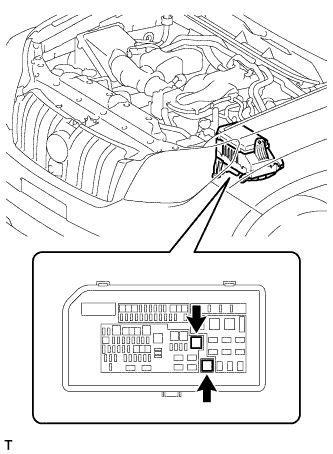
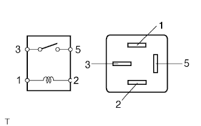
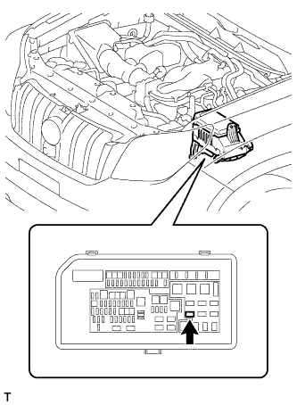
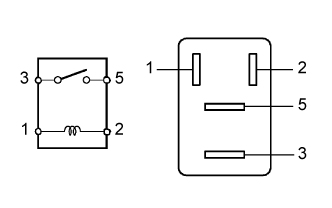

РЕЛЕ > ПРОВЕРКА БЕЗ СНЯТИЯ С АВТОМОБИЛЯ |
| 1. СНИМИТЕ РЕЛЕ ФАР |
|  |
Извлеките реле фар из блока реле моторного отсека.
| 2. ПРОВЕРЬТЕ РЕЛЕ ФАР |
|  |
Измерьте сопротивление в соответствии со значениями, приведенными в таблице ниже.
| Контакты для подключения диагностического прибора | Условие | Заданные условия |
| 3 - 5 | Напряжение аккумуляторной батареи не подается на контакты 1 и 2 | 10 кОм или более |
| Напряжение аккумуляторной батареи подается на контакты 1 и 2 | Менее 1 Ом |
| 3. УСТАНОВИТЕ РЕЛЕ ФАР |
Установите реле фар в блок реле моторного отсека.
| 4. СНИМИТЕ РЕЛЕ ЗАДНИХ ПРОТИВОТУМАННЫХ ФОНАРЕЙ |
|  |
Извлеките реле заднего противотуманного фонаря из блока реле моторного отсека.
| 5. ПРОВЕРЬТЕ РЕЛЕ ЗАДНИХ ПРОТИВОТУМАННЫХ ФОНАРЕЙ |
|  |
Измерьте сопротивление в соответствии со значениями, приведенными в таблице ниже.
| Контакты для подключения диагностического прибора | Условие | Заданные условия |
| 3 - 5 | Напряжение аккумуляторной батареи не подается на контакты 1 и 2 | 10 кОм или более |
| Напряжение аккумуляторной батареи подается на контакты 1 и 2 | Менее 1 Ом |
| 6. УСТАНОВИТЕ РЕЛЕ ЗАДНИХ ПРОТИВОТУМАННЫХ ФОНАРЕЙ |
Извлеките реле заднего противотуманного фонаря из блока реле моторного отсека.